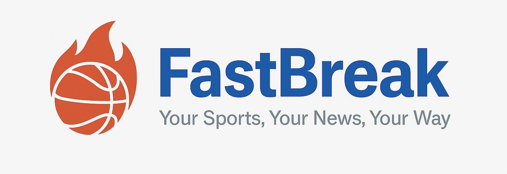

Featured
iAgentBench, UW InfoSeeking Lab
Published iAgentBench at SIGIR 2026 (under Professor Chirag Shah), a benchmark evaluating how AI agents reason across multi-source, fast-changing information environments. Also optimized and containerized Dynamic-KGQA (SIGIR 2025) for local Ollama deployment, enabling multi-model LLM QA generation from dynamic subgraphs on limited compute.

FastBreak, AI Sports Newsletter
Fully live AI-powered sports newsletter covering 5+ leagues. Pick up to 6 favorite teams and get a personalized daily digest with no noise or irrelevant scores. Live with 20+ daily active users. Free forever.
Research
Gaussian Processes for ML
Directed Reading Program with the UW Department of Statistics. Collaborated with a PhD student to learn and apply Gaussian Processes for supervised machine learning on labeled datasets.
Projects
TimeSync, Group Scheduling
Web app that finds common availability for groups by reading Google Calendar links. Stores and compares free times in real time with a React frontend.

SpotiStats
Pulls your Spotify listening history and surfaces stats on top artists, genres, and listening trends across your playlists.
Doxxing Calculator
Privacy tool that checks whether personal information has been exposed on Twitter, helping users understand and reduce their digital footprint.